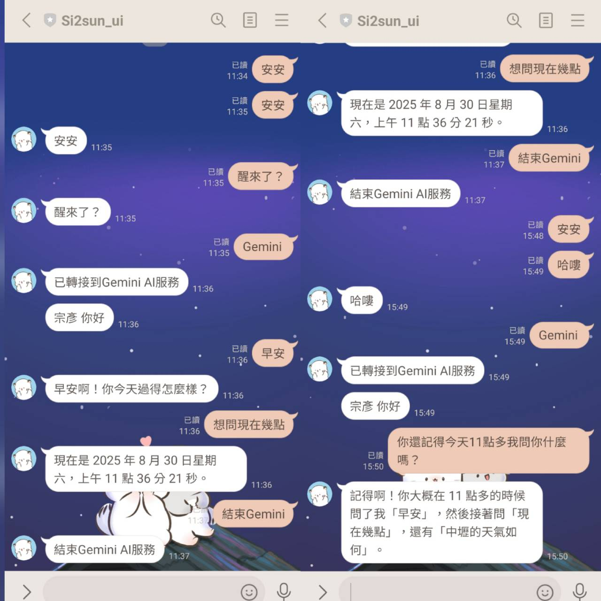
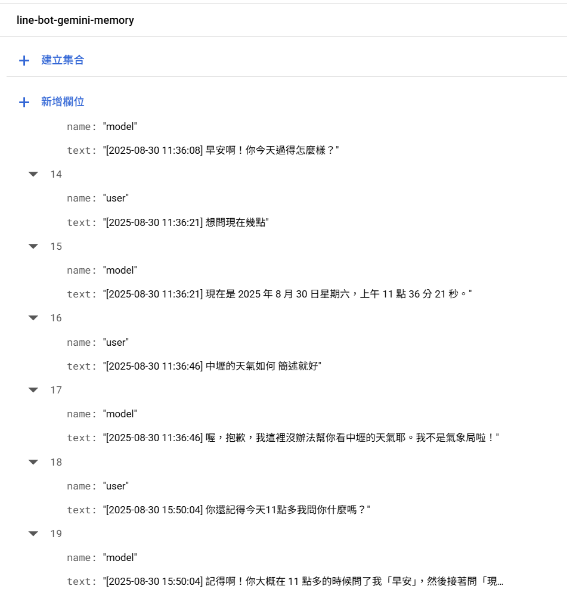

專案名稱：Linebot與Gemini API應用
專案簡介
此專案是一個建立在 LINE 平台上的智慧聊天機器人。它透過 Python Flask 框架作為後端，成功串接了 Google 的 Gemini 生成式 AI 模型，使其具備了流暢的對話能力。 並整合了 Google Cloud Firestore 資料庫，儲存每一輪的對話紀錄，使AI回復具有「長期記憶」。
功能特色
- 智慧雙模式：透過關鍵字在「回音模式」與「Gemini AI 智慧對話」模式間無縫切換。
- Gemini AI 整合：串接 Google Gemini API，提供高品質的生成式 AI 對話能力。
- 雲端對話記憶：運用 Firestore 保存歷史紀錄，賦予 AI 理解上下文的記憶能力。
- 容器化部署：以 Docker 將 Flask 應用程式容器化，並部署於 Render 雲端平台。
- 個人化互動：透過 LINE Push API 主動推播訊息，以使用者暱稱進行問候。
詳細說明
-
1. 初始模式:自動重復使用者在聊天室中所輸入的訊息
2. 使用者在聊天室輸入"gemini"時，進入gemini-mode，連結到gemini api
3. 這時使用者所輸入訊息時，通過API傳送gemini生成式AI
4. 經過一段時間，gemini所生成的答覆回傳到後端
5. 如此一輪問答的內容會打包成json(role,訊息)，並與該訊息發送的時間一起儲存於firestore
6. 後端再回傳gemini的答覆
7. 下一輪問答時，會連同歷史紀錄的json(時間、role、訊息)一起傳送到gemini生成式AI，使AI的回覆具有記憶力
8. 輸入"結束gemini"，跳出gemini-mode，回到初始模式
雲端部署
將Flask後端程式打包成dockerfile的專案，部署於render
將line-bot帳號的webhook修改成部署於render的URL
 使用的技術
後端框架：Python(Flask)
生成式 AI：Google Gemini API (`google-generativeai`)
資料庫：Google Cloud Firestore
LINE Bot 開發：LINE Messaging API v3 (`line-bot-sdk`)
部署：Docker, Render (雲端應用託管平台)